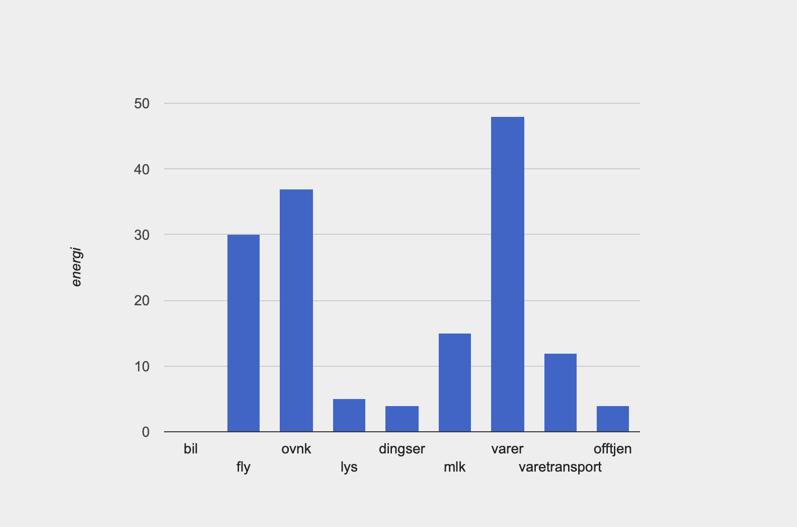

Vebjørn
Alder: 21
Favoritt farge: Grønn
Favoritt dyr: Ku
Hjemsted: Leirsund
Tekst: Min tilnærming til å beregne mitt klimaavtrykk involverte å sammenligne det med gjennomsnittspersonens påvirkning. Deretter analyserte jeg mine egne vaner og handlinger for å evaluere hvor jeg befant meg i forhold til denne gjennomsnittspersonen. Denne tilnærmingen gjorde det lettere for meg å identifisere områder der jeg kunne minske min miljøpåvirkning.
